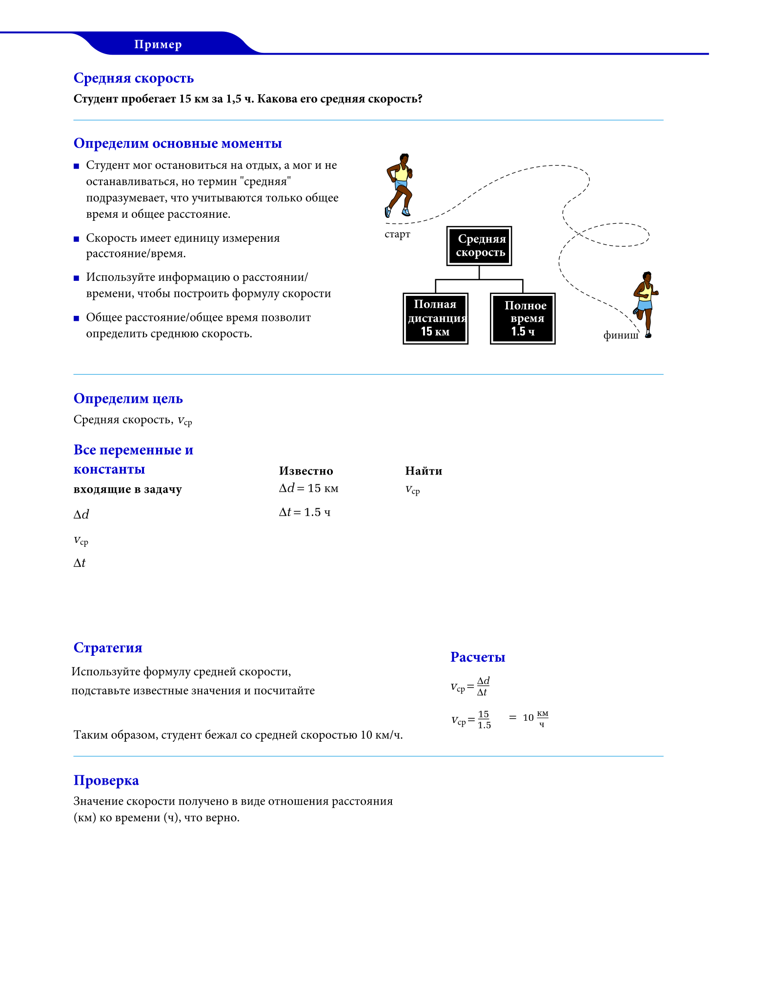

Кинематика
Классификация и сравнение движений (так называемая кинематика) часто представляет собой сложную задачу. Надо понимать,что именно необходимо измерять и как сравнивать.
Что такое "прямолинейное движение"?
Мы будем рассматривать некоторые общие свойства движения, которые ограничены двумя критериями:
- Движение происходит только по прямой линии. Линия может быть вертикальной, горизонтальной или наклонной, но она должна быть прямой.
- Движущийся объект - это частица (материальная точка, под которой мы понимаем материальный объект)
Материальная точка (МТ) - часто используемое абстрактное физическое понятие, которое пренебрегает размерами физического тела, если они не важны.
Положение тела (точки)
Определить местоположение объекта означает найти его положение относительно некоторой точки отсчета, в том числе начала (или нулевой точки) оси, такой как ось x на риcунке ниже. Положительное направление оси - это направление увеличения чисел (координаты), которое на рисунке направлено вправо, а противоположное направление - отрицательное.

Например, частица может находиться в точке = 3 м, это означает, что она находится на расстоянии 3 м в положительном направлении от начала координат. Если бы она находилась в точке = -3 м, она была бы так же удалена от начала координат, но в противоположном направлении. На оси координата -3 м меньше координаты -1 м, и обе координаты меньше координаты +3 м. Знак плюс для координаты можно не показывать, а знак минус нужно показывать всегда.

Смещение из положения 1 в положение 2 будем называть проекцией перемещения Δ, где
$$\Delta x=x_{1}-x_{0}$$
$$\Delta x-изменение \ положения [м, метры]$$
$$x_{0}-начальная \ позиция [м, метры]$$
$$x_{1}-конечная \ позиция [м, метры]$$

Для одномерного движения смещение по оси (проекцию перемещения) можно найти как сумму всех смещений вдоль этой оси.
Если у вас есть несколько смещений по оси , например,
$$\Delta x_{1}= 5, \Delta x_{2}= -3, \Delta x_{3}= 2, $$
то результирующее перемещение по оси будет равно:
$$\Delta x=\Delta x_{1}+\Delta x_{2}+\Delta x_{3}=5 - 3 + 2 = 4$$
Таким образом, результирующее перемещение по оси равно четырём единицам длины.
# МОДЕЛИРОВАНИЕ
